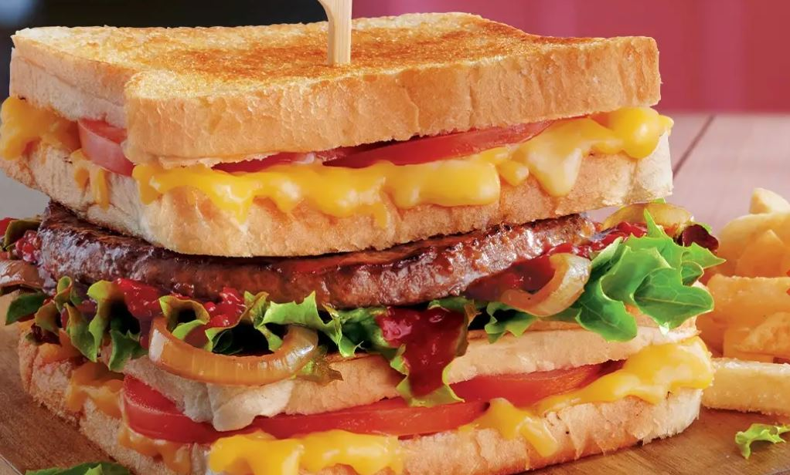
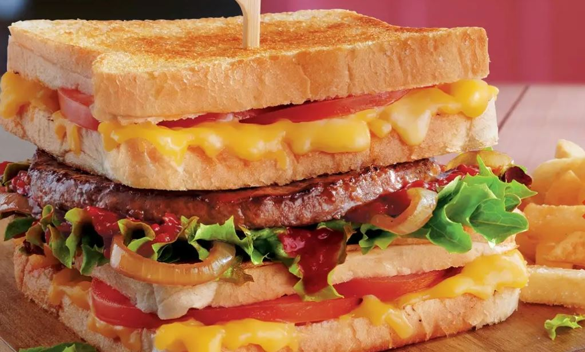

WIMPY
Wimpy is the brand name of a multinational chain of former fast food restaurants that has been gradually upgrading units to become casual dining style diners with table service since a change of ownership that occurred in 2007. The brand is headquartered in Johannesburg, South Africa. The chain began in 1934 in the United States and was based in Chicago. The brand was introduced to the United Kingdom in 1954 as "Wimpy Bar".[1] Wimpy grew to approximately 1,500 locations in several countries before narrowing to a few hundred locations in two countries. Wimpy's worldwide headquarters was located in the United States and the United Kingdom before relocating to South Africa.
The Wimpy brand was established in 1934 by Edward Gold, when he opened his first location in Bloomington, Indiana under the name Wimpy Grills.The name was inspired by the character of J. Wellington Wimpy from the Popeye cartoons created by E. C. Segar. Gold did not open his first Chicago area location until two years later in 1936, after opening units in five other Midwestern cities.[4] By 1947, the Chicago Tribune reported that the chain had 26 units, and expected to sell eight million hamburgers annually in the Chicago area.
WHERE CAN YOU FIND US?
First floor near Gate:2, opposite Edgars.